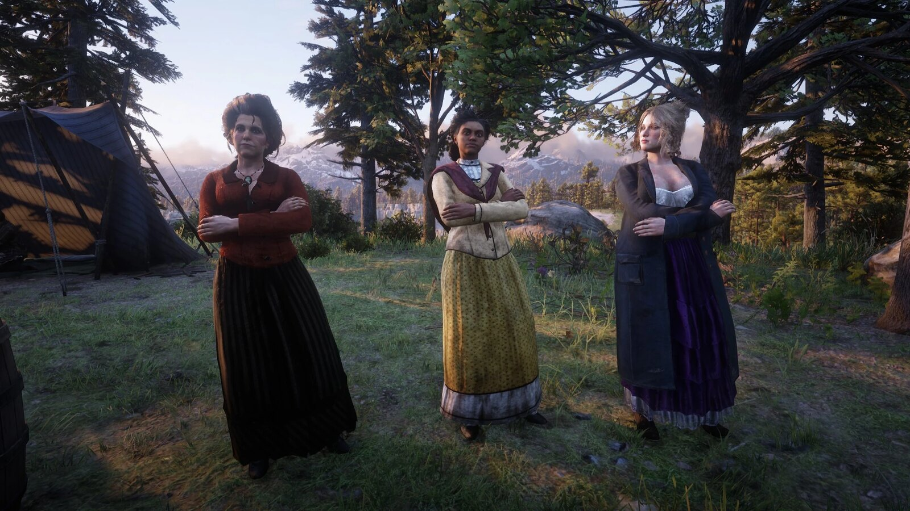
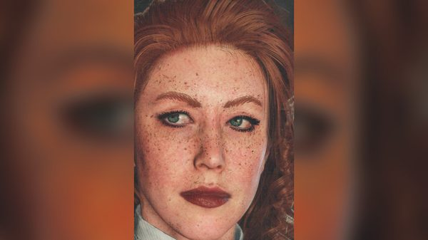
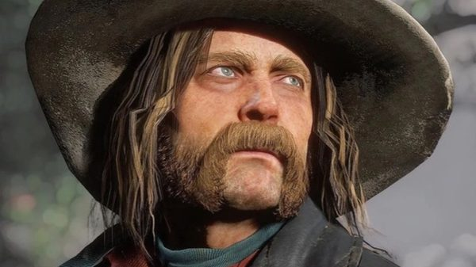
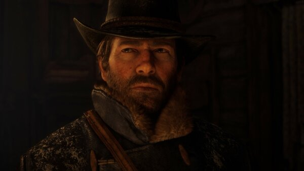
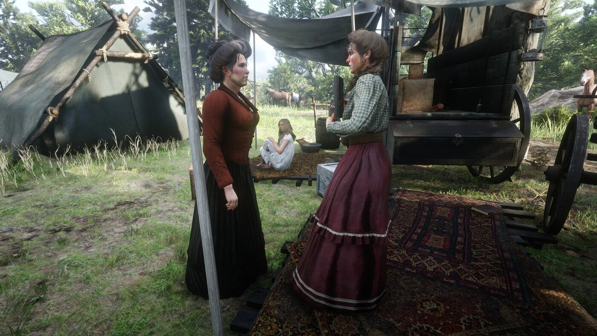

Character · Van der Linde gang
Susan Grimshaw
Susan Grimshaw runs the camp of the Van der Linde gang in Red Dead Redemption 2. Rockstar describes her as "the undisputed boss and arbiter of justice in the camp".
She is killed by Micah Bell in 1899, after taking Arthur's side against him.
- Died
- 1899
- Status
- Deceased
- Nationality
- American
- Affiliation
- Van der Linde gang
- Role
- Runs the camp
- Voiced by
- Kaili Vernoff
- Games
- Red Dead Redemption 2
Biography
The camp's authority
According to the official guide, Grimshaw was once in a relationship with Dutch; after it ended, she remained his loyal partner. She has been in the gang as long as Arthur. With Pearson, she sets up each new camp, and she makes sure everyone does their share of the work, especially the younger women.
Tilly's rescue
In chapter 4, in "No, No and Thrice, No", the Foreman Brothers kidnap Tilly Jackson. Grimshaw and Arthur free her at Radley's House; Grimshaw kills a guard with a knife. Whether to kill or spare the captured Anthony Foreman is left to Arthur.
Molly O'Shea
At the new camp at Beaver Hollow, a drunk Molly O'Shea claims she told the Pinkertons about the Saint Denis bank job. Grimshaw shoots her dead with a shotgun, saying Molly "knew the rules", and has the body burned. Molly's claim later turns out to be false.
Death
In the final mission of chapter 6, "Red Dead Redemption", Arthur names Micah Bell as the gang's traitor. Grimshaw is the only one to side openly with Arthur and John, and turns her shotgun on Micah. Distracted by the arrival of the Pinkertons, she is shot dead by Micah. Charles Smith later buries her.
Relationships

Dutch van der Linde
Her former partner, to whom she stays loyal until Micah's betrayal.

Tilly Jackson
Rescued by her and Arthur from the Foreman Brothers.

Molly O'Shea
Shot by Grimshaw after her false confession.

Micah Bell
The traitor she confronts, and who kills her.

Arthur Morgan
The one she sides with at the end.
Development and performance
Grimshaw is played by Kaili Vernoff. Speaking to Forbes in February 2019, she said she worked on the game "for about four and a half years, off and on", and that it was both the first video game she had worked on and the first she had ever played. She had previously voiced a minor character in Grand Theft Auto V.
In the same interview, she described Susan's code: "Everyone must earn their keep; she cannot abide hangers on or laziness; and she values loyalty above all." Speaking to GameFragger the same month, she said she wanted Susan's vulnerability to come through as she came to understand the character, and that "Susan dies defending her family and she wouldn't have it any other way."
Reception
In Polygon, in November 2018, Colin Campbell called Grimshaw "literally a walking cliché", comparing her to frontier matriarchs of classic westerns and television, such as Ma Ingalls in Little House on the Prairie.
Gallery
